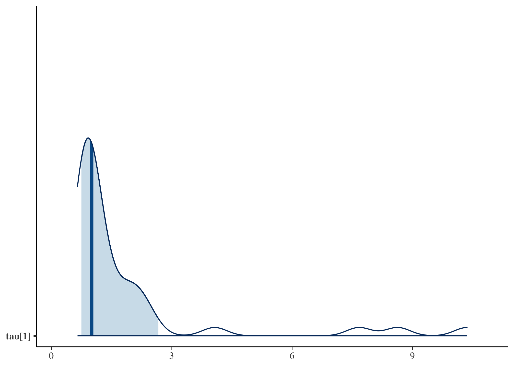
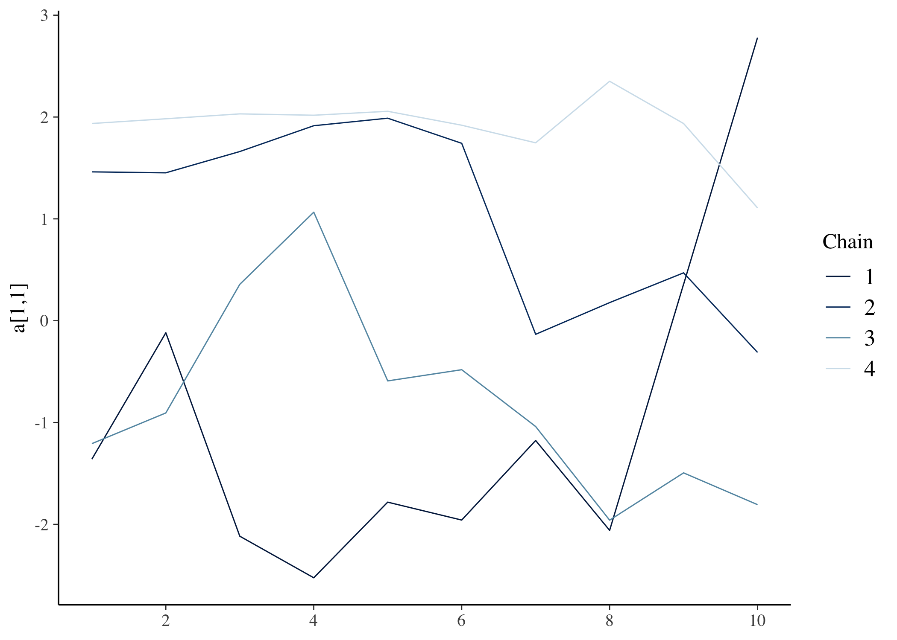
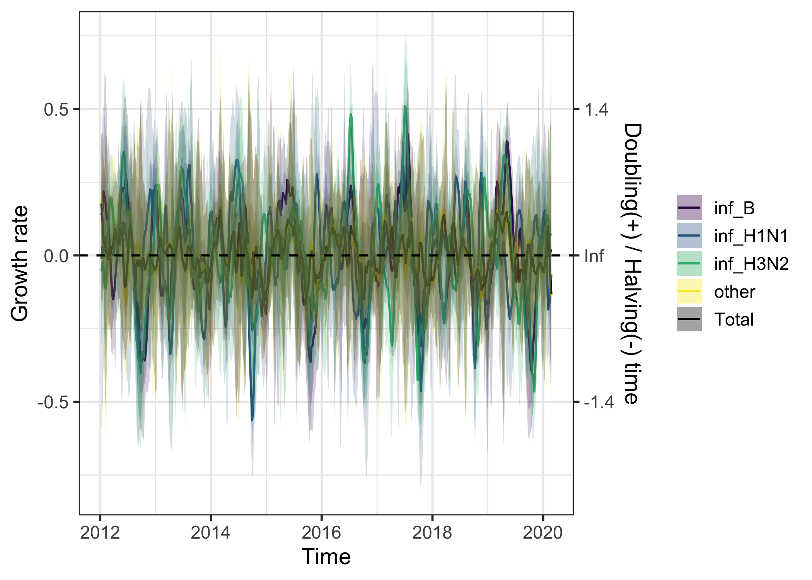
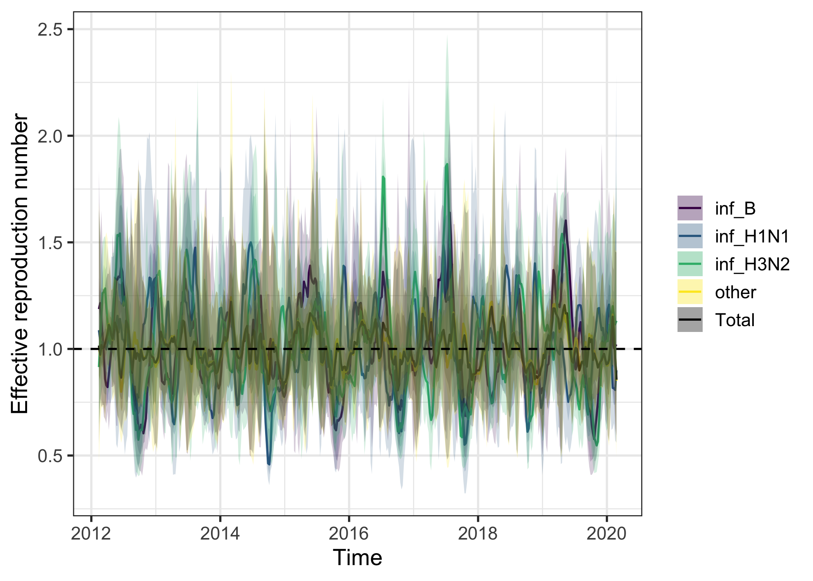
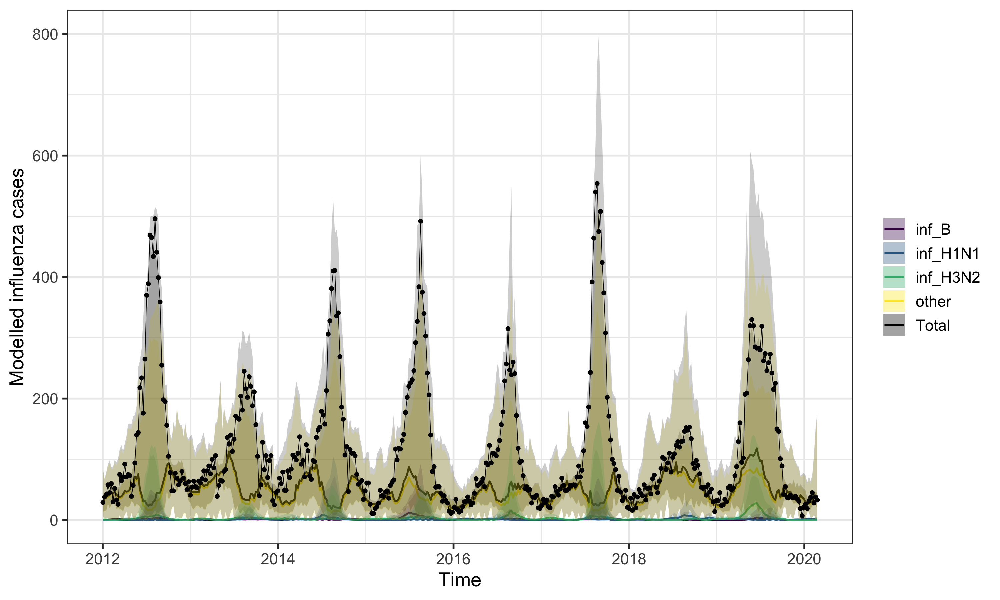
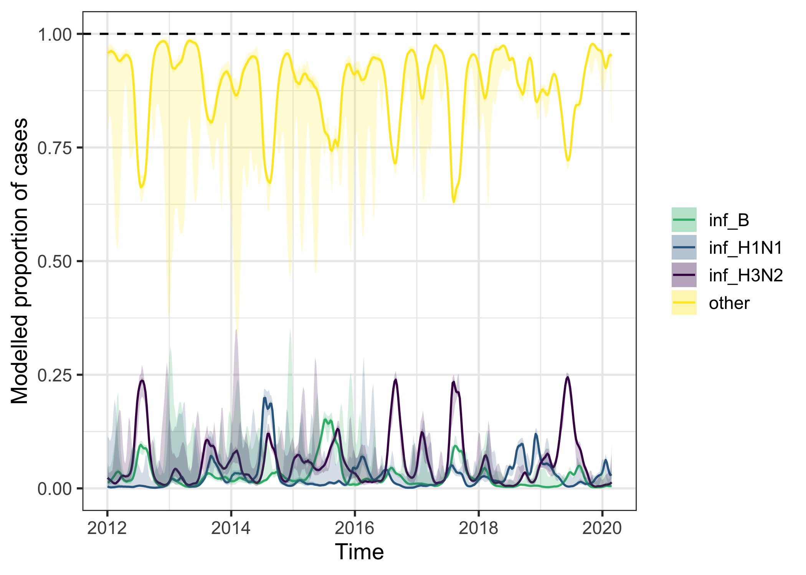
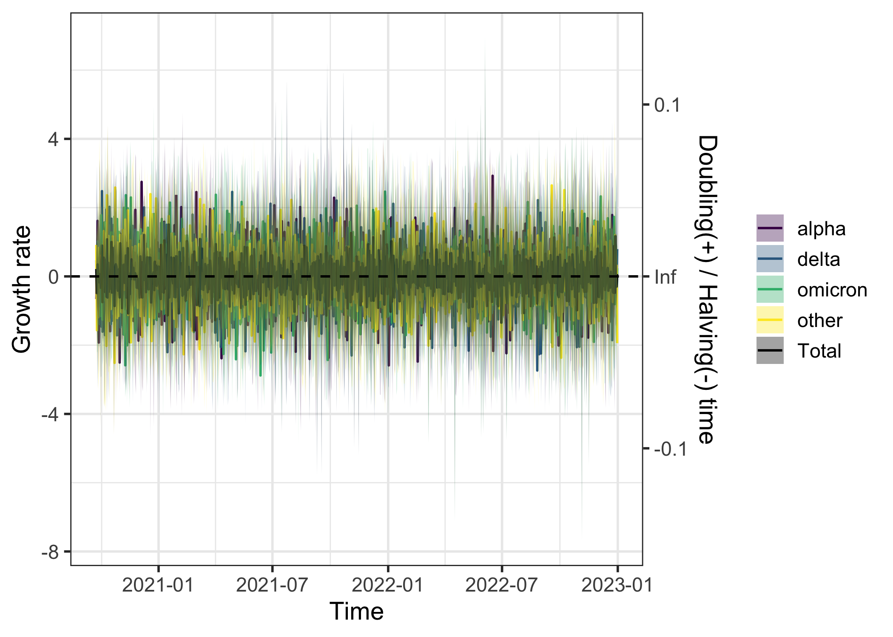
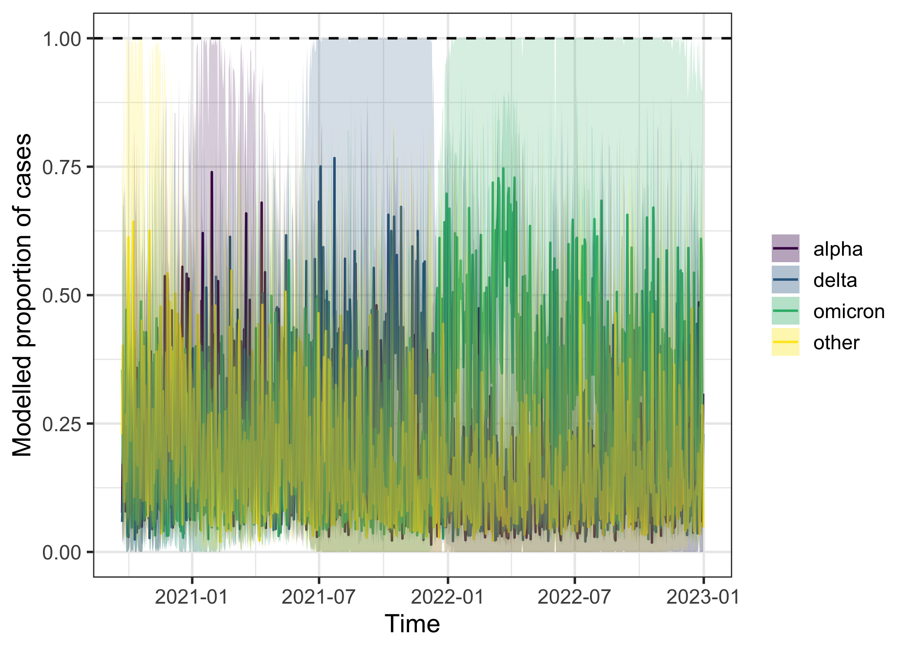

EpiStrainDynamics extends an existing statistical modelling framework capable of inferring the trends of up to two pathogens. The modeling framework has been extended here to handle any number of pathogens; fit to time series data of counts (eg, daily number of cases); incorporate influenza testing data in which the subtype for influenza A samples may be undetermined; account for day-of-the-week effects in daily data; include options for fitting penalized splines or random walks; support additional (optional) correlation structures in the parameters describing the smoothness of the penalized splines (or random walks); and account for additional (optional) sources of noise in the observation process.
Step 1: Construct model
These modelling specifications are specified using the
construct_model function. The correct stan model is then
applied based on the specifications provided.
construct_model() requires specification of the
method and pathogen_structure, and allows the
user to additionally specify four arguments related to model design:
smoothing_params, dispersion_params,
pathogen_noise, and dow_effect. We will break
these down one by one.
Method
EpiStrainDynamics has pre-compiled stan models that fit either with
bayesian penalised splines or random walks. These are specified using
the method argument of construct_model() as
functions, either with random_walk() or
p_spline(). The penalised spline model has two further
options to specify: spline_degree is the polynomial degree
of the individual spline segments used to construct the overall curve
(must be a positive whole number) and days_per_knot, which
is the number of days for each knot (must also be a positive whole
number).
So we may specify:
method = random_walk(),
# OR
method = p_spline(spline_degree = 3, # example value for spline degree
days_per_knot = 2) # example value for days per knotPathogen structure
There are three main types of pathogen structure available to model:
single(), multiple(), and
subtyped(). These functions require the name of the dataset
itself and the column names for different data elements. These can also
ingest timeseries class objects, which would then make the
time column specification optional. Any timeseries class
input that is handled by the tsbox
package is acceptable. The models are not currently equipped to
handle missing values or irregular date sequences.
The single() pathogen structure is the simplest and
models a single pathogen timeseries. The name of the dataframe is passed
to argument data, the name of the column with total case
data is passed to case_timeseries, and the name of the
column of time data is passed to time (optional if input
dataset is a timeseries class). It can be specified as follows,
illustrated using data provided with the package
sarscov2:
pathogen_structure = single(
data = sarscov2, # dataframe
case_timeseries = 'cases', # timeseries of case data
time = 'date' # date or time variable
)The multiple() pathogen structure allows modelling of
different component pathogens. In addition to specifying
data, case_timeseries, and time
(optional if input dataset is a timeseries class), these additional
pathogens are specified as a vector of column names with the argument
component_pathogen_timeseries. Example pathogen structure
specification for multiple pathogens model using the
sarscov2 dataset:
pathogen_structure = multiple(
data = sarscov2, # dataframe
case_timeseries = 'cases', # timeseries of case data
time = 'date', # date or time variable labels
component_pathogen_timeseries = c( # vector of column names of
'alpha', 'delta', 'omicron', 'other' # component pathogens
)
)The subtyped() pathogen structure enables additional
complexity specifically for an influenza modelling scenario by allowing
the user to incorporate testing data for influenza A subtypes. The
unsubtyped column is specified with
influenzaA_unsubtyped_timeseries, and the subtyped data are
specified with vector of column names of provided to
influenzaA_subtyped_timeseries. Additional pathogens are
provided as a vector of column names to
other_pathogen_timeseries. Example pathogen structure
specification for subtyped model using the influenza
dataset included in the package:
pathogen_structure = subtyped(
data = influenza, # dataframe
case_timeseries = ili, # timeseries of case data
time = week, # date or time variable labels
influenzaA_unsubtyped_timeseries = 'inf_A', # unsubtyped influenzaA
influenzaA_subtyped_timeseries = c( # subtyped influenzaA
'inf_H3N2', 'inf_H1N1'
),
other_pathogen_timeseries = c( # other pathogens
'inf_B', 'other'
)
)Smoothing parameters
The argument smoothing_params allows users to modify the
correlation structures in the parameters describing smoothness and set
related priors. These are specified with the function
smoothing_structure() that requires the user to specify a
smoothing_type that is either shared (all
pathogens have the same smoothness), independent (each
pathogen has completely independent smoothing structure), or
correlated (smoothing structure is correlated among
pathogens). For shared or independent
smoothing types parameters for the mean and standard deviation of the
prior on tau can also be specified, as below:
smoothing_params = smoothing_structure(
smoothing_type = 'independent',
tau_mean = c(0, 0.1, 0.3, 0),
tau_sd = rep(1, times = 4)
)Dispersion parameters
The argument dispersion_params allows users to set a
prior for the overdispersion parameter, phi, of the
negative binomial likelihood for the case timeseries. This parameter
controls how much the reported case count can vary from day to day
around the model’s expected value. Even if the model’s smooth trend
exactly captured the true expected number of cases on a given day, the
actual reported count would still vary, since it depends on which
patients happened to seek care, get tested, or have their test processed
and reported that day. A negative binomial (rather than Poisson)
likelihood is used because real surveillance counts are almost always
more variable than a simple random-sampling process would predict, a
pattern known as overdispersion. Smaller phi allows more
day-to-day variation in reported counts; larger phi keeps
them closer to the trend.
It is specified using dispersion_structure() as
below:
dispersion_params = dispersion_structure(
phi_mean = 0, phi_sd = 1
)Pathogen noise
By default, the model assumes that on any given day, the relative mix
of pathogens follows exactly the smooth underlying trends, and that any
noisiness in the observed composition (e.g. how many positive tests were
pathogen A vs. B) comes only from the day-to-day reporting variation
described with phi, above.
It is possible to add an extra source of variability, allowing the true day-to-day mix of pathogens to jitter around the smooth trend, not just the observed counts. This matters because real pathogens don’t necessarily move in lockstep with a single shared epidemic curve; one pathogen can genuinely spike or dip relative to the others for reasons the smooth trend alone doesn’t capture.
The argument pathogen_noise refers to whether to include
this noise between individual pathogens and can be specified as a
logical (TRUE or FALSE).
Day of week effect
Surveillance data reported by calendar day often show a weekly pattern that has nothing to do with disease transmission, for example, fewer specimens processed or reported over weekends due to lab and clinic schedules.
Day of week effect is specified as a logical (TRUE or
FALSE) to the dow_effect argument. Setting
dow_effect = TRUE fits a separate multiplier for each day
of the week, so these reporting-schedule artifacts are absorbed by the
day-of-week terms rather than being mistaken for genuine changes in the
epidemic trend. In plotting the day of week effect can be selectively
removed.
Worked example
A full worked example using a subtyped structure:
mod <- construct_model(
method = p_spline(),
pathogen_structure = subtyped(
data = influenza,
case_timeseries = 'ili',
time = 'week',
influenzaA_unsubtyped_timeseries = 'inf_A',
influenzaA_subtyped_timeseries = c('inf_H3N2', 'inf_H1N1'),
other_pathogen_timeseries = c('inf_B', 'other')
),
smoothing_params = smoothing_structure(
'independent', tau_mean = c(0, 0.1, 0.3, 0), tau_sd = rep(1, times = 4)),
dispersion_params = dispersion_structure(phi_mean = 0, phi_sd = 1),
pathogen_noise = FALSE,
dow_effect = TRUE
)Output
The constructed model object is a named list containing the formatted
data to be modelled, accessed with $data, a timeseries
object of class tsibble that has been validated for gaps
and regularity, accessed with $validated_tsbl, parameter
values structured for the stan interface (such as smoothing structure,
observation noise, and penalised spline parameters, if appropriate),
accessed with model_params, names of provided pathogens,
accessed with pathogen_names, and record of whether day of
week effect has been selected, accessed with
dow_effect.
Step 2: Fit model
The model estimates the expected value of the time series (eg, a
smoothed trend in the daily number of cases accounting for noise) for
each individual pathogen. Model parameterisation decisions specified
when constructing the model in step 1 mean the correct stan model will
be applied at this stage by simply calling fit_model() onto
the constructed model object.
fit <- fit_model(
mod,
n_iter = 20,
n_warmup = 10,
verbose = FALSE
)
#> Warning: Very few effective samples will be retained after thinning
#> ℹ With `n_iter` = 20, `n_warmup` = 10, `thin` = 1, and `n_chain`
#> = 4
#> ℹ Only 40 samples will be retained
#> ℹ Consider reducing `thin` or increasing `n_iter`
#> Warning: There were 4 chains where the estimated Bayesian Fraction of Missing Information was low. See
#> https://mc-stan.org/misc/warnings.html#bfmi-low
#> Warning: Examine the pairs() plot to diagnose sampling problems
#> Warning: The largest R-hat is 2.76, indicating chains have not mixed.
#> Running the chains for more iterations may help. See
#> https://mc-stan.org/misc/warnings.html#r-hat
#> Warning: Bulk Effective Samples Size (ESS) is too low, indicating posterior means and medians may be unreliable.
#> Running the chains for more iterations may help. See
#> https://mc-stan.org/misc/warnings.html#bulk-ess
#> Warning: Tail Effective Samples Size (ESS) is too low, indicating posterior variances and tail quantiles may be unreliable.
#> Running the chains for more iterations may help. See
#> https://mc-stan.org/misc/warnings.html#tail-essThe output of this function is a list with the stan fit object,
accessed with $fit, and the elements of the constructed
model object from the previous step, accessed with
$constructed_model.
Step 3: Check fit
A summary of model convergence diagnostics can be viewed using:
diagnose_model(fit)
#> Model Convergence Diagnostics
#> =============================
#> Overall convergence: ISSUES DETECTED
#> Maximum R-hat: 3.03
#> Minimum n_eff: 3Beyond this summary, the stan fit object can be interrogated with any
package that works with stan outputs. For example, one could visualise
posteriors with the package bayesplot:
bayesplot::mcmc_areas(as.matrix(fit$fit), pars = 'tau[1]', prob = 0.8)
The bayesplot package can also be used to evaluate
convergence:
bayesplot::mcmc_trace(rstan::extract(fit$fit, permuted = FALSE), pars = c('a[1,1]'))
Or else the application shinystan is a great tool to
visualise the fit and diagnose issues:
library(shinystan)
launch_shinystan(fit$fit)Model not converging? You can find more information about divergent transitions here. Some quick tips:
- Increase the
adapt_deltaparameter in fit_model(), which governs how big the steps are in the MCMC. - Try reducing the complexity of the model. For example, by using
pathogen_noise = FALSEor a shared smoothing structure. - Increase the number of warmup samples with the n_warmup parameter.
Step 4: Calculate and explore epidemiological quantities
The package provides helper functions to calculate a number of useful
epidemiological quantities. The output of these methods functions are a
named list containing a tsibble of the outcome quantity
($measure), the fit object ($fit), and the
constructed model object ($constructed_model).
measure is a tsibble containing the median of the
epidemiological quantity (y), the 50% credible interval of
the quantity (lb_50 & ub_50), the 95%
credible interval (lb_95 & ub_95), the
proportion greater than a defined threshold value (prop),
the pathogen name (pathogen), and the time index
(time).
Calculate epidemic growth rate with growth_rate():
gr <- growth_rate(fit)
head(gr$measure)
#> # A tsibble: 6 x 9 [7D]
#> # Key: pathogen [1]
#> pathogen pathogen_idx y lb_50 ub_50 lb_95 ub_95
#> <chr> <int> <dbl> <dbl> <dbl> <dbl> <dbl>
#> 1 Total NA 0.177 0.0783 0.244 -0.159 0.417
#> 2 Total NA 0.119 -0.00736 0.188 -0.146 0.350
#> 3 Total NA 0.0409 -0.0311 0.126 -0.115 0.331
#> 4 Total NA 0.0436 -0.0917 0.127 -0.409 0.298
#> 5 Total NA 0.0243 -0.0853 0.117 -0.528 0.406
#> 6 Total NA 0.000323 -0.111 0.0634 -0.391 0.407
#> # ℹ 2 more variables: prop <dbl>, time <date>
plot(gr)
Calculate effective reproduction number over time with
Rt() (requiring specification of a generation interval
distribution):

Calculate incidence with or without a day of week effect with
incidence():

Calculate proportions of different combinations of cases attributable
to different pathogens/subtypes using proportion(). By
default, the function will return a dataframe with proportions of each
pathogen or subtype out of all pathogens/subtypes. Alternatively, one
can specify a selection of pathogens/subtypes by their names in the
named lists provided to construct_model():
prop <- proportion(
fit,
numerator_combination = c('inf_H3N2', 'inf_H1N1'),
denominator_combination = c('inf_H3N2', 'inf_H1N1', 'inf_B', 'other')
)
prop <- proportion(fit)
plot(prop)
Additional worked example: COVID-19
The worked example above uses influenza data with a subtyped pathogen
structure and penalised splines. To illustrate a different combination,
the following constructs and fits a random walk model to the
sarscov2 dataset bundled with the package, using the
multiple pathogen structure to model the different
SARS-CoV-2 variants circulating over time.
mod_covid <- construct_model(
method = random_walk(),
pathogen_structure = multiple(
data = sarscov2,
case_timeseries = 'cases',
time = 'date',
component_pathogen_timeseries = c('alpha', 'delta', 'omicron', 'other')
),
smoothing_params = smoothing_structure(
'independent', tau_mean = c(0, 0.1, 0.3, 0), tau_sd = rep(1, times = 4)),
dispersion_params = dispersion_structure(phi_mean = 0, phi_sd = 1),
pathogen_noise = FALSE,
dow_effect = TRUE
)
fit_covid <- fit_model(
mod_covid,
n_iter = 20,
n_warmup = 10,
verbose = FALSE
)
#> Warning: Very few effective samples will be retained after thinning
#> ℹ With `n_iter` = 20, `n_warmup` = 10, `thin` = 1, and `n_chain`
#> = 4
#> ℹ Only 40 samples will be retained
#> ℹ Consider reducing `thin` or increasing `n_iter`
#> Warning: There were 2 divergent transitions after warmup. See
#> https://mc-stan.org/misc/warnings.html#divergent-transitions-after-warmup
#> to find out why this is a problem and how to eliminate them.
#> Warning: There were 3 transitions after warmup that exceeded the maximum treedepth. Increase max_treedepth above 10. See
#> https://mc-stan.org/misc/warnings.html#maximum-treedepth-exceeded
#> Warning: There were 4 chains where the estimated Bayesian Fraction of Missing Information was low. See
#> https://mc-stan.org/misc/warnings.html#bfmi-low
#> Warning: Examine the pairs() plot to diagnose sampling problems
#> Warning: The largest R-hat is 4.6, indicating chains have not mixed.
#> Running the chains for more iterations may help. See
#> https://mc-stan.org/misc/warnings.html#r-hat
#> Warning: Bulk Effective Samples Size (ESS) is too low, indicating posterior means and medians may be unreliable.
#> Running the chains for more iterations may help. See
#> https://mc-stan.org/misc/warnings.html#bulk-ess
#> Warning: Tail Effective Samples Size (ESS) is too low, indicating posterior variances and tail quantiles may be unreliable.
#> Running the chains for more iterations may help. See
#> https://mc-stan.org/misc/warnings.html#tail-essAs before, growth rate and pathogen proportions can be calculated and plotted directly from the fit:
gr_covid <- growth_rate(fit_covid)
plot(gr_covid)
prop_covid <- proportion(fit_covid)
plot(prop_covid)